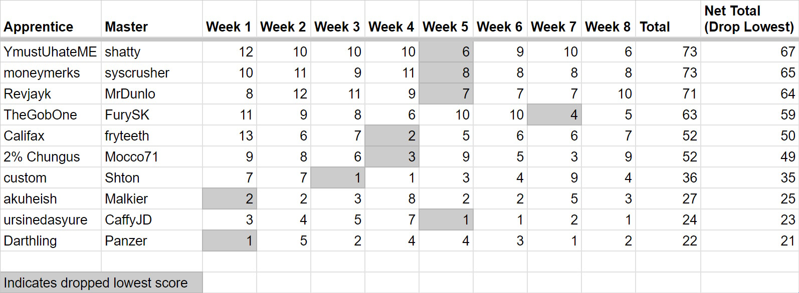

Season 6: Master and Apprentice
Organizer: NickHasAGame
Flags: (Randomizer Version 3.5.3)
Week 1: BQXzbv5ZfG6br0lZqUZ0YUeN0bGMh
Week 2: 8teQwZ6YOzySFGiJ6edQXlWfqp9T
Week 3: 1dnroUCPbQdFDo5SCkmIx5Cl7t2CwM
Week 4: 6vHT0!nd5C7yY306Kw12g8V2Qga
Week 5: 3orKXeleomwvy!TjDhopzcXbs4yZ1
Week 6: 3JPNh2aUNtMmuDAhDWw0E0xCxey9bo
Week 7: !BV0TqQd5A!ywMwfkGizppfehjV
Week 8: iEnbcXlgqfqenGH9ob0zvxgWsTZjah
Special Rules: Eight weeks of non-elimination, asynchronous play with a veteran (master) player mentoring a novice (apprentice) player, designed to introduce new racers to varied flagsets and progressive challenges. Royale ultima points are only given to Apprentice players
Winner:

Final Standings (Apprentice/Master):
- YMustUhateME (Shatty)
- Moneymerks (Syscrusher)
- Revjayk (MrDunlo)
- TheGobOne (FurySK)
- Califax (Fryteeth)
- 2% Chungus (Mocco71)
- Custom (Shton)
- Akuheish (Malkier)
- Ursinedasyure (CaffyJD)
- Darthling (PanzerDave)
Return to Season 6